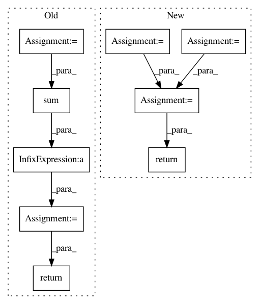

62859ba05a9dff7677b6946077544bb9a224c8cc,pymc3/variational/opvi.py,Approximation,logp,#Approximation#Any#,960
Before Change
return self.logq(z) / self.normalizing_constant
def logp(self, z):
factors = ([tt.sum(var.logpt)for var in self.model.basic_RVs] +
[tt.sum(var) for var in self.model.potentials])
p = self.to_flat_input(tt.add(*factors))
p = theano.clone(p, {self.input: z})
return p
def logp_norm(self, z):
t = self.normalizing_constant
factors = ([tt.sum(var.logpt) / t for var in self.model.basic_RVs] +
After Change
def logp(self, nmc=None):
if nmc is None:
_logp = self.single_symbolic_logp
nmc = 1
else:
_logp = self.sized_symbolic_logp
_logp = _logp / pm.floatX(self._n_samples)
return self.set_size_deterministic(_logp, nmc, 0)
def logp_norm(self, nmc):
return self.logp(nmc) / self.normalizing_constant
In pattern: SUPERPATTERN
Frequency: 4
Non-data size: 9
Instances
Project Name: pymc-devs/pymc3
Commit Name: 62859ba05a9dff7677b6946077544bb9a224c8cc
Time: 2017-06-28
Author: maxim.v.kochurov@gmail.com
File Name: pymc3/variational/opvi.py
Class Name: Approximation
Method Name: logp
Project Name: IBM/adversarial-robustness-toolbox
Commit Name: ef005b7af46c99ab6aec809a56bb29c9aaeaff73
Time: 2020-04-06
Author: mathsinn@ie.ibm.com
File Name: art/utils.py
Class Name:
Method Name: compute_success
Project Name: IBM/adversarial-robustness-toolbox
Commit Name: b2892275c7365da5df5ea96cbef587ea1ba6407e
Time: 2020-03-29
Author: mathsinn@ie.ibm.com
File Name: art/utils.py
Class Name:
Method Name: compute_success
Project Name: ray-project/ray
Commit Name: ce96b03b07a4a4bdd851aa84493c616cd291aff2
Time: 2020-10-06
Author: sven@anyscale.io
File Name: rllib/examples/env/mbmpo_env.py
Class Name: HopperWrapper
Method Name: reward